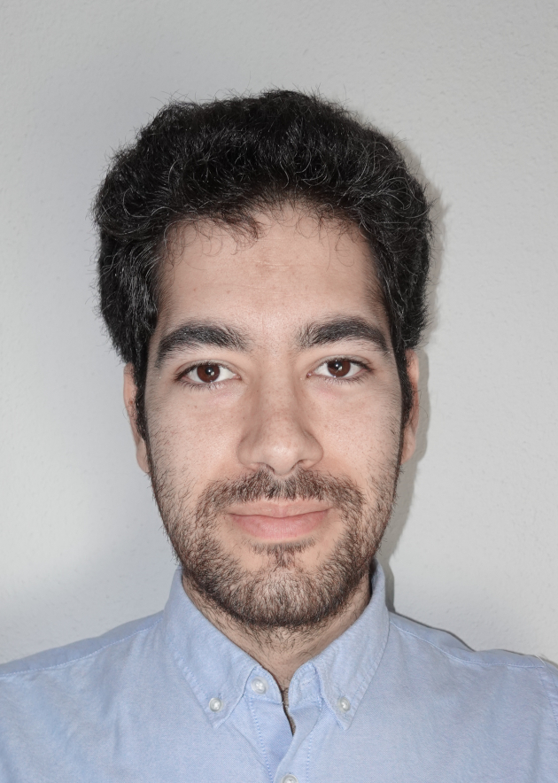

Manuel
Linares Ruiz
About me
I am a calm and hardworking person. I work well in groups and I am respectful. I easily adapt to new work metho-dologies and dynamics. I am very curious and enjoy learn-ing. I may be too perfectionist and persevering.
Contact
+34 679741522
Getafe, Spain
manuel.lr993@gmail.com
Others
Licence type B
Education
Master's Degree in Advanced Palaeontology
Complutense University of Madrid and University of Alcalá
Sep. 2015 - Sep. 2017
Degree in Geology
University of Salamanca
Sept. 2011 - Sep. 2015
Language skills
Native Spanish
Fluent in English
Intermediate in French
Begginer in German
Begginer in Arabic
Experience
Laboratory technician
MNCN-CSIC
Dec. 2019 - Nov. 2021
Photointerpreter and GIS technician
Tragsatec
June 2019 - Sep. 2019
Palaeontologist (voluntary work)
Regional Archaeological Museum of Madrid, Pinilla del Valle sites
Sep. 2017 and Sep. 2018
Palaeontologist (voluntary work)
International Institute for Prehistoric Research of Cantabria, La Garma A site
August 2017 and August 2018
Palaeontologist (voluntary work)
National Museum of Natural Sciences, Cerro de los Batallones site
July 2016 and July 2018
Palaeontologist (voluntary work)
Atapuerca Foundation, Sierra de Atapuerca sites
July 2017 and July 2018
Palaeontologist (voluntary work)
Complutense University of Madrid, Somosaguas site
May 2016
Additional training
MásterGIS Presencial
ESRI España
2022 - Now
3D Geometric Morphometrics; Geometric Morphometrics for Begginers
Transmitting Science
2022
Análisis por técnicas no destructivas
CSIC
2021
Spatial Data Science: The New Frontier in Analytics; Cartography; The Location Advantage
ESRI MOOCs
2020
Professional certificate IEXD0309:
Desarrollo y supervisión de obras de restauración en piedra natural
Community of Madrid
2018-2019
Programming skills
HTML
Python
JavaScript
CSS
Software skills
ArcGIS Pro
Illustrator
Photoshop
InDesign
Interests
Nature
Science
Art
Books
Movies and series
Music
Games
Print